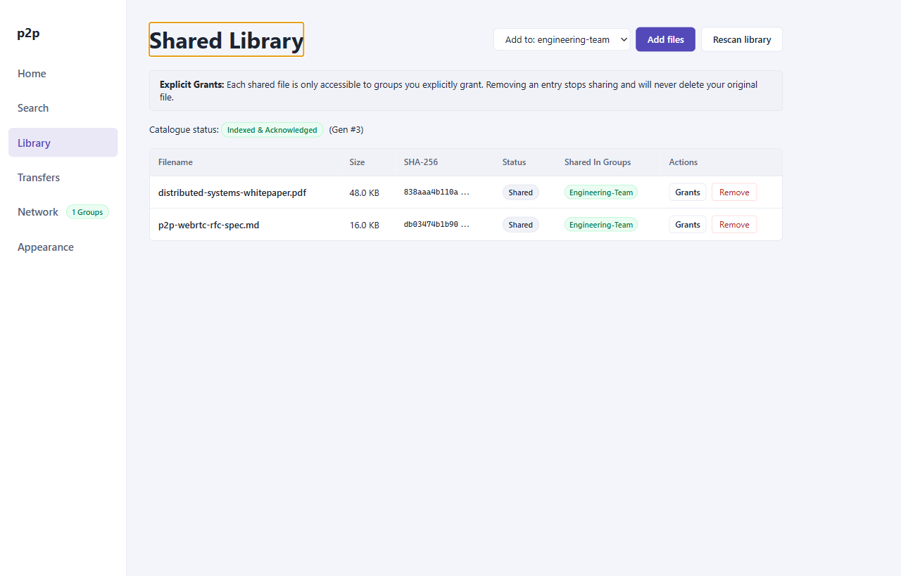

User Guide: Library & File Sharing
The Library view manages the files you publish to the P2P network. It implements fine-grained group access control, content-addressable SHA-256 fingerprinting, background verification pipelines, and atomic capability revocation.
1. Library Interface
The Shared Library screen displays all locally tracked files, their verification status, storage footprints, and virtual group grants:

Screen Elements
- Share Files Button: Opens the native OS file picker to add files to the shared catalog.
- Rescan Library Button: Triggers a background pass verifying file presence, timestamps (
mtime), and integrity on disk. - Shared Files Table: Displays file name, on-disk path, human-readable size, cryptographic status, active group grant tags, and item action controls (
Manage Groups,Remove).
2. Adding Files to the Library
Files can be added to your library using the native desktop file picker:
- Click Share Files in the Library view header.
- Select one or more files from your filesystem.
- The application registers each file in the
MultiGroupPeerStoreand initiates the background hashing pipeline. - If a default group is currently selected in the UI dropdown, access is immediately granted to that group; otherwise, the file is added in an ungranted state until you configure its groups.
3. Cryptographic Hashing Pipeline
To preserve content addressability across dynamic peer networks, all shared files are indexed by their SHA-256 cryptographic digest.
Pipeline States
| Status | Badge | Description |
|---|---|---|
hashing |
hashing | File is being processed by background worker streams using Node.js crypto.createHash('sha256'). |
shared |
shared | SHA-256 hash computed successfully; file is published to the catalogs of granted groups. |
unavailable |
unavailable | File path does not exist on disk or file permissions deny read access. |
error |
error | An unrecoverable I/O or filesystem error occurred during streaming. |
Microtask Coalescing
Hashing runs asynchronously in non-blocking chunked streams. File metadata updates are published to connected supernodes in batched catalog messages (≤ 32 entries per batch) to prevent network saturation when adding large directories.
4. Fine-Grained Group Access Grants
Unlike legacy single-network file sharing software, p2p-multiple-groups does not broadcast your entire library to every connected peer. Instead, access is governed by per-file Group Grants.
Managing Group Access
- In the file row, click Manage Groups (or click the active group grant pills).
- An interactive checklist displays all currently joined virtual groups.
- Toggle checkmarks to grant or revoke access for individual groups:
- Checked: The file's SHA-256 digest, name, and size are advertised in that group's catalog. Peers in that group can locate and download the file.
- Unchecked: The file is strictly invisible to that group.
- Click Done or press Enter to commit changes.
Immediate Dynamic Revocation
When you revoke a group's grant for a file:
- The node dispatches an updated catalog delta to the group's supernodes, immediately removing the entry from the inverted search index.
- If an active download of that file is currently in progress with a peer from the revoked group, the next chunk dispatch check fails with
FORBIDDEN: File grant revoked, immediately terminating the data channel. - Transfers belonging to other groups sharing the same physical WebRTC connection are completely unaffected.
Dynamic revocation checks are performed per 16 KiB chunk. An uploader cannot leak ungranted file bytes to peers after a grant toggle occurs in the UI.
5. Rescanning the Library
Files may change on disk outside the application. Clicking Rescan Library triggers a full synchronization pass:
- Compares filesystem modification timestamps (
mtimeMs) and sizes against cached metadata. - If a file's timestamp or size has changed, its status reverts to
hashingand a new SHA-256 digest is computed. - If a file is missing or inaccessible, its status is marked
unavailable, and catalog advertisements are temporarily withheld from supernodes.
6. Removing Files from the Library
To stop sharing a file across all groups:
- Click Remove in the file row.
- The file is unregistered from
peer-state.json. - Catalog revocation notices are sent to all previously granted groups.
- Any active outbound uploads of that file are cleanly aborted.
- Note: The underlying file on your local storage drive is never deleted; only the application's sharing registration is removed.